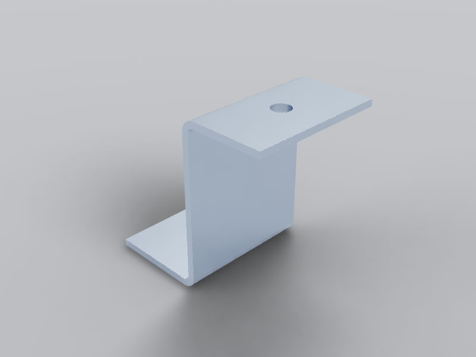
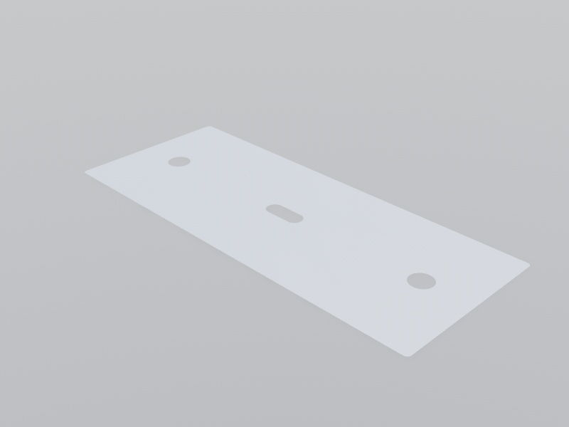

07-sheet-bracket
A laser-cut and bent 2 mm steel Z bracket: the bent part (to check as sheet metal) and its flat blank on z = 0 (to export as DXF), the blank's length from the bend allowance, with each bend's centre line drawn on a layer of its own ("bend notes"). Check: cad model dfm "$ID" --process sheet --material steel


Source
Run it with cad run examples/dogfood/07-sheet-bracket.ts.
// A laser-cut and bent 2 mm steel Z bracket: the bent part (to check as sheet metal) and its flat
// blank on z = 0 (to export as DXF), the blank's length from the bend allowance, with each bend's
// centre line drawn on a layer of its own ("bend notes").
// Check: cad model dfm "$ID" --process sheet --material steel
import { Plane, assembly, circle, model, param, polyline, rect, sketch, slot } from "@cad/sdk";
import type { Shape } from "@cad/sdk";
const t = 2, r = 2, k = 0.42, width = 40;
const legs = [30, 50, 25]; // outside lengths of the three flats, mm
const BA = (Math.PI / 2) * (r + k * t); // bend allowance of a 90 degree bend
const flats = [legs[0]! - (r + t), legs[1]! - 2 * (r + t), legs[2]! - (r + t)];
const flatLength = flats[0]! + flats[1]! + flats[2]! + 2 * BA;
/** The bent part: a Z in the XZ plane (u = x, v = z), extruded `width` along Y. */
function bent() {
const [a, b, c] = legs as [number, number, number];
return sketchZ(a, b, c, r, r + t, Math.SQRT1_2).extrude(width, { midplane: true });
}
function sketchZ(a: number, b: number, c: number, ri: number, ro: number, s: number) {
// bottom flange along +x at z 0..t, up the web at x = a - t .. a, top flange along +x at z = b - t .. b
const x0 = a - ro; // where the first bend starts on the outside
return sketch(Plane.XZ)
.moveTo(0, 0).lineTo(x0, 0)
.arcTo([x0 + ro * s, ro - ro * s], [a, ro]) // outside of bend 1
.lineTo(a, b - ri - t)
.arcTo([a + ri - ri * s, b - t - ri + ri * s], [a + ri, b - t]) // inside of bend 2
.lineTo(a + c - t, b - t).lineTo(a + c - t, b)
.lineTo(a + ri, b)
.arcTo([a - t + ro - ro * s, b - ro + ro * s], [a - t, b - ro]) // outside of bend 2
.lineTo(a - t, ro)
.arcTo([x0 + ri * s, ro - ri * s], [x0, t]) // inside of bend 1
.lineTo(0, t)
.close();
}
export const zBracket = model("z_bracket", () => {
const hole = param("hole", 5.5, { min: 2, max: 10, step: 0.5, unit: "mm" });
const holes = [
circle(hole / 2, { plane: Plane.XY.moveTo([12, 0, -1]) }).extrude(t + 2),
circle(hole / 2, { plane: Plane.XY.moveTo([legs[0]! + legs[2]! - 12 - t, 0, legs[1]! - t - 1]) }).extrude(t + 2),
];
return bent().cut(holes).label("z_bracket", { color: "#a0aec0", material: "steel" });
});
export const zBlank = model("z_bracket_flat", () => {
const hole = param("hole", 5.5, { min: 2, max: 10, step: 0.5, unit: "mm" });
const outline = rect(flatLength, width, { radius: 1 }).at(flatLength / 2, 0)
.hole(circle(hole / 2).at(12, 0), circle(hole / 2).at(flatLength - 12, 0), slot(10, 4).at(flatLength / 2, 0));
const bendAt = [flats[0]! + BA / 2, flats[0]! + BA + flats[1]! + BA / 2];
const lines: Shape[] = bendAt.map((x) => polyline([[x, -width / 2, 0], [x, width / 2, 0]]));
return assembly("flat", [outline.label("cut"), ...lines.map((l, i) => l.label(`bend_${i + 1}_up_90`))]);
});
if (import.meta.main) {
await zBracket();
const flat = await zBlank();
if (process.argv.includes("--export")) console.log("wrote", ...(await flat.export("out/z_bracket_flat.dxf")));
}